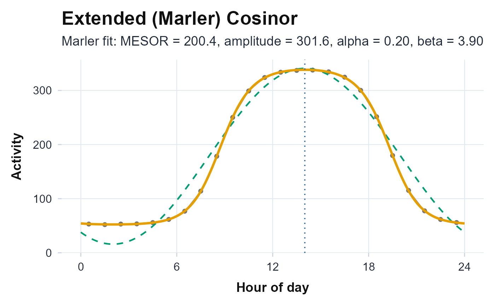

Plot the Extended (Marler) Cosinor Fit on the 24-Hour Activity Profile
Source:R/circadian_plots.R
plot_extended_cosinor.RdBuilds the averaged 24-hour activity profile and overlays two model fits for
comparison: the Marler (2006) anti-logistic extended cosinor from
cosinor.antilogistic (drawn as a bold solid curve) and the
ordinary single-component cosinor from cosinor.analysis (drawn
as a dashed curve). The acrophase (time of peak) is marked with a vertical
line and the extended-fit parameters are shown in the subtitle.
Arguments
- counts
Numeric vector of activity counts (one value per epoch).
- timestamps
A
POSIXctvector of timestamps, the same length ascounts.- period
Numeric period of the rhythm in hours passed to
cosinor.antilogistic()(default24).
Value
A ggplot object: the averaged hourly profile (points and a
light connecting line) over hour-of-day 0-24, with the extended and
ordinary cosinor curves overlaid. If the extended fit does not converge the
profile and ordinary cosinor are still drawn with a "did not converge" note;
on insufficient data an annotated empty ggplot is returned. The
function never errors.
Details
The profile is the mean activity in each clock-hour bin averaged across all
recorded days (bin centres at hour + 0.5), matching the profile that
cosinor.analysis() and cosinor.antilogistic() fit internally.
The fitted curves are evaluated on a dense 0-24 h grid:
Extended (Marler): \(f(t) = minimum + amplitude \cdot expit(\beta (cos(2\pi (t - acrotime)/T) - \alpha))\), using the
minimum,amplitude,alpha,betaandacrotimereturned bycosinor.antilogistic().Ordinary: \(M + A cos(2\pi (t - acrophase)/T)\), using the
mesor,amplitudeandacrophasefromcosinor.analysis().
The subtitle reports the extended-fit MESOR, amplitude, the alpha
width-asymmetry and the beta steepness when the fit converged.
References
Marler MR, Gehrman P, Martin JL, Ancoli-Israel S (2006). “The sigmoidally transformed cosine curve: a mathematical model for circadian rhythms with symmetric non-sinusoidal shapes.” Statistics in Medicine, 25(22), 3893–3904. doi:10.1002/sim.2466 .
Cornelissen G (2014). “Cosinor-based rhythmometry.” Theoretical Biology and Medical Modelling, 11, 16. doi:10.1186/1742-4682-11-16 .
Examples
# \donttest{
ts <- seq(as.POSIXct("2024-01-01 00:00:00"), by = 60, length.out = 1440 * 7)
hour <- as.numeric(format(ts, "%H")) + as.numeric(format(ts, "%M")) / 60
counts <- 50 + 300 * plogis(4 * (cos((hour - 14) * 2 * pi / 24) - 0.2)) +
rnorm(length(ts), 0, 10)
plot_extended_cosinor(counts, ts)

# }